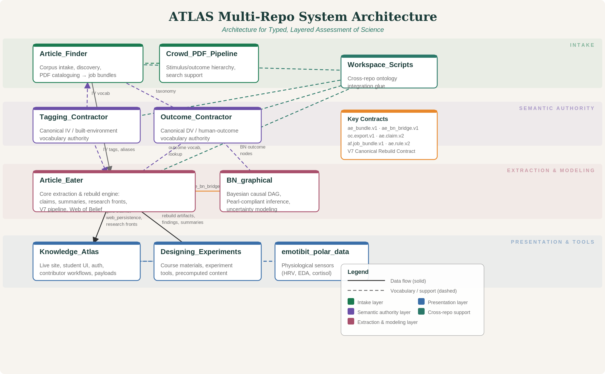

Use this diagram to orient Week 2 work: the class is not building isolated widgets, but small components that connect to a larger evidence intake, semantic authority, extraction, modeling, and presentation stack.
COGS 160 · Introduction to the System
This diagram shows how the Article Finder, Article Eater, Knowledge Atlas, and supporting repos fit together as a typed evidence and course-production system.

Use this diagram to orient Week 2 work: the class is not building isolated widgets, but small components that connect to a larger evidence intake, semantic authority, extraction, modeling, and presentation stack.